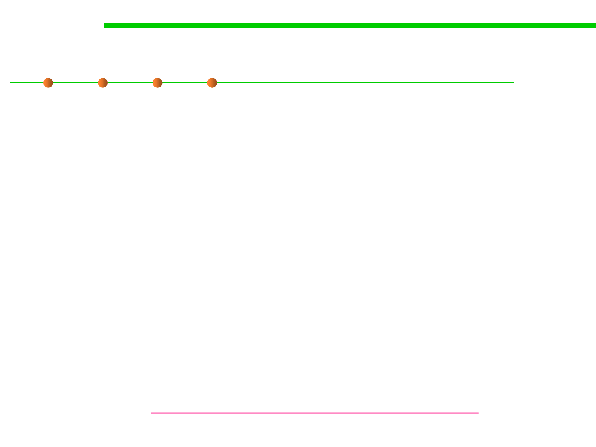

9.2 Refactoring Techniques and Tool Support
Some types of refactoring
▪ Refactoring to fit design patterns
▪ Renaming (methods, variables)
▪ Extracting code into a method or module
▪ Splitting one method into several to improve cohesion and readability
▪ Changing method signatures
▪ Performance optimization
▪ Moving statements that semantically belong together near each other
▪ Naming (extracting) "magic" constants
▪ Exchanging idioms that are risky with safer alternatives
▪ Clarifying a statement that has evolved over time or is unclear
https://www.refactoring.com/catalog/